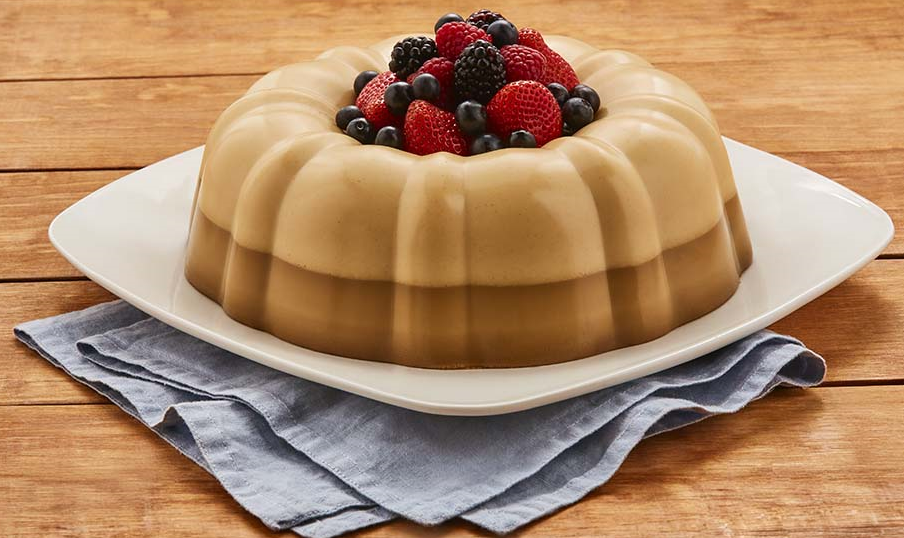

Bom, o Tiago é um músico muito famoso, não apenas pelas suas músicas, mas também pela pausa que deu na carreira por conta dos transtornos que a internet gerava no mesmo. Justamente por esse motivo eu gostaria de poder conversar com ele, gostaria de saber o que ele aprendeu e construiu nesse tempo afastado... E gelatina de café parece ser uma boa comida para puxar conversa! hahaha
| Ingredientes | Quantidade |
|---|---|
| gelatina Apti sabor limão | 2 caixas |
| café Solúvel | 1 clr. de sopa |
| leite condensado | 1 lata |
| creme de leite | 1 lata |
Passo 1
Dissolva a gelatina em 2 xícaras de água quente.
Passo 2
Adicione mais 1 xícara de água fria e coloque o café deixando esfriar totalmente.
Passo 3
Bata no liquidificador a gelatina com café, o leite condensado e o creme de leite e coloque em taças.
Passo 4
Leve à geladeira até o ponto de consistência.
Passo 5
Na hora de servir decore com cerejas.
Passo 6
Bom Apetite!
